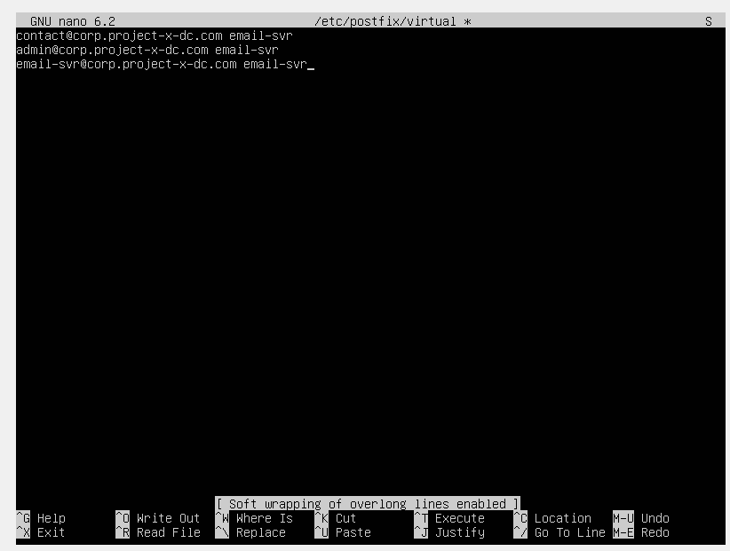
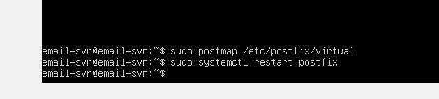
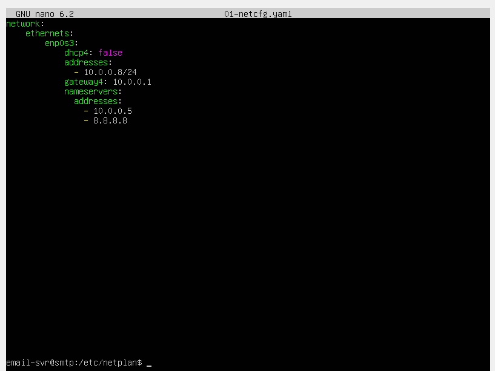
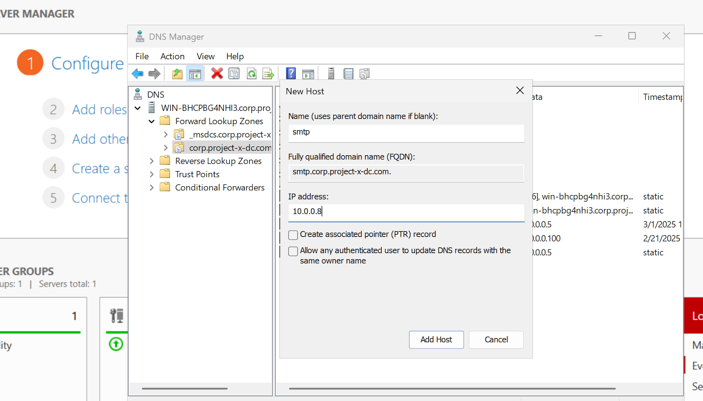
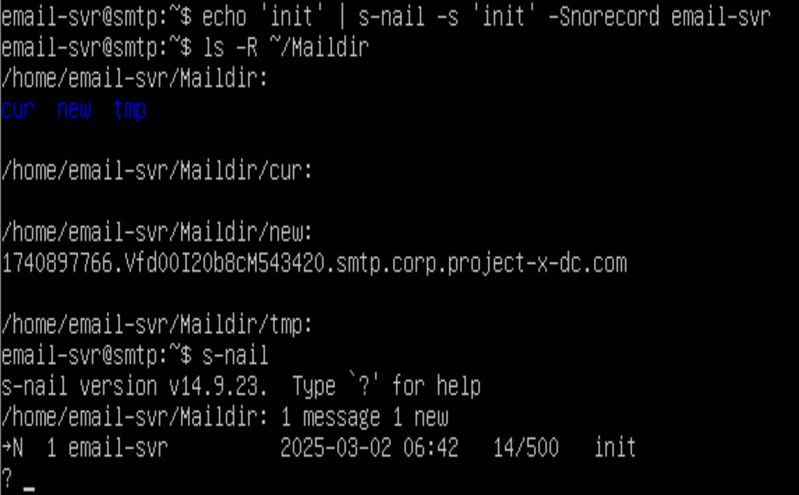
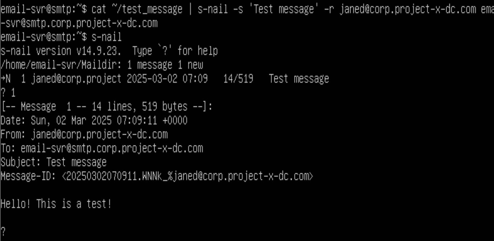

📬 Postfix Mail Transfer Agent (SMTP)
Postfix is a popular open-source Mail Transfer Agent (MTA) used to route and deliver email on Linux systems. It’s reliable, fast, and runs on about 25% of public email servers.
For this project, I set up Postfix as a simple SMTP server to send and deliver messages between my simulated clients — the Windows and Linux workstations. It acted as the middleman in the delivery process, taking in messages, processing them, and passing them on to the right destination.
Setting up Postfix in this environment gave me a clearer understanding of how email flows across a network and what’s involved in securing that process.
🧠 Why Build an Email Server?
Running an email server helps me see how real-world messaging systems operate. It covers everything from SMTP, IMAP, and POP3 protocols, to DNS configuration, identity mapping, and internal routing.
While I didn’t set up full external communication (like sending from johnd to a real janed@gmail.com), I was able to simulate email exchange between two local users — such as johnd and janed — within the lab environment.
⚙️ Setting Up Postfix
I configured /etc/postfix/virtual to map arbitrary email addresses to the local email-svr system account. This way, Postfix knows which messages to accept and where to deliver them.

I then applied the mappings.

🧭 Backup DNS Configuration
I also added Google’s DNS (8.8.8.8) as a backup resolver in case my Domain Controller is unavailable — ensuring continued DNS resolution.

🌐 DNS Configuration
To make things easier across the network, I created a new DNS host record for the SMTP server:
- Hostname:
smtp.corp.project-x-dc.com
- IP Address:
10.0.0.8
By adding this entry in DNS Manager on the Domain Controller under Forward Lookup Zones, I made sure all devices on the network can resolve smtp.corp.project-x-dc.com to the correct IP.

Why This Matters:
- ✅ Simplifies network management
- ✅ Avoids the need to remember IPs
- ✅ Makes services easier to access
- ✅ Supports future changes (just update the DNS record)
From any device, I can now ping the hostname:
ping smtp.corp.project-x-dc.com
And get a response from 10.0.0.8.
📥 Sending a Test Email with s-nail
To test the email server, I used the s-nail package — a command-line email client. Once installed and configured, I could send a message and verify it landed in the /home/email-svr/Maildir directory.
Maildir automatically created three subfolders:
- cur/ – read messages
- new/ – unread messages
- tmp/ – temp files during delivery

Using s-nail, I was able to enter the mailbox, view the test message, and read the email content.
🔄 Testing Internal Delivery: email-svr to janed
To simulate an internal exchange, I impersonated the janed account and sent a message from one local user to another using the -r flag to modify the "From" field. This allowed me to route and receive email internally on the same server — successfully validating that Postfix was set up and functioning.

However, this didn't come without any challenges...